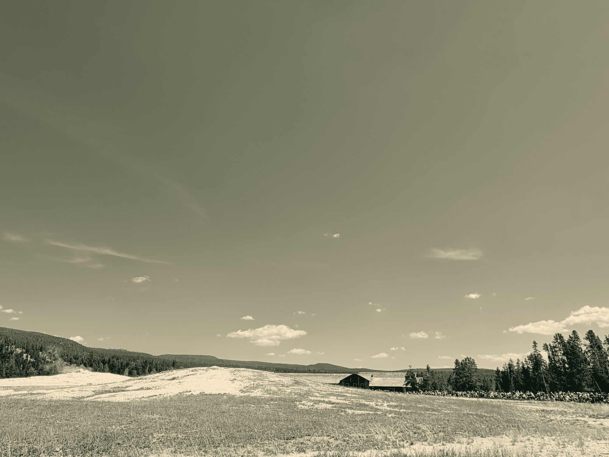
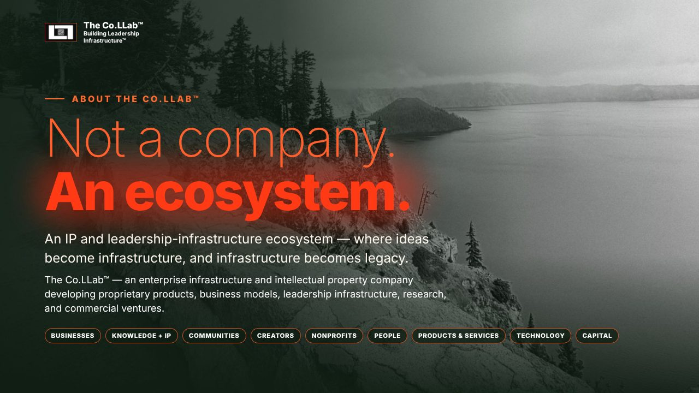

About The Co.LLab™
Not a company. An ecosystem.
An IP and leadership-infrastructure ecosystem — where ideas become infrastructure, and infrastructure becomes legacy.
About · Corporate Identity & Strategic Positioning
The problem
Unclear corporate positioning and disconnected organizational objectives can weaken stakeholder alignment, strategic execution, and communication of long-term economic value.
The solution
About establishes The Co.LLab™ corporate identity, mission, strategic positioning, and operating philosophy around leadership infrastructure, proprietary intellectual property, and sustainable enterprise development.
Omnidirectional Enterprise™ · The economic strategy
Every page. Every direction.
One economy, nine directions. Find the page built for yours.
Mission
To build leadership infrastructure that empowers people and organizations to transform human potential into performance, sustainable enterprise value, and lasting legacy.
Vision
A world where infrastructure is built around human potential — rather than people being forced to conform to infrastructure that was never designed for them.

Built to perform, on schedule
Built to perform. Built to last.
The measure of a system isn't whether it can perform once — it's whether it performs again, predictably, long after the people who built it have moved on.
The Co.LLab™ · Economic context
What is Omnidirectional Enterprise™?
Omnidirectional Enterprise™ is an economic enterprise system that connects people, organizations, products, intellectual property, capital, and resources in one ecosystem. It is the operating model of The Co.LLab™.
The problem
The global economy faces a structural coordination problem: capital, labor, intellectual property, technology, and decision-making authority operate through institutions and markets whose incentives do not always align with productive contribution. Market concentration, information asymmetry, unequal bargaining power, and fragmented governance can constrain competition, impede entrepreneurship, weaken regional economic development, and concentrate the financial returns from innovation.
The solution
The Co.LLab™ develops proprietary products, intellectual property, and leadership infrastructure organized around the Omnidirectional Enterprise™ operating model — designed to improve resource coordination, strengthen organizational capability, connect intellectual assets with practical and commercial applications, and expand access to opportunities for economic participation.
Inside the company
The founder steps back, people change, the market shifts. Weak organizational foundations, fragmented operations, inadequate governance, and insufficient succession planning can increase execution risk, reduce productivity, and expose organizations to operational and financial instability.
Market conditions
These pressures intersect with geopolitical realignment, supply-chain restructuring, automation, changing investment patterns, and the growing economic importance of intangible assets — raising the strategic importance of productivity, institutional adaptability, intellectual property ownership, effective governance, and access to commercial infrastructure.
The central economic proposition
Economic performance depends not only on creating value, but on the systems governing how resources are coordinated, intellectual property is owned, decisions are made, innovations reach markets, and returns are captured and reinvested. Generating value and capturing value are different processes.
The company
The Co.LLab™ — an enterprise infrastructure and intellectual property company developing proprietary products, business models, leadership infrastructure, research, and commercial ventures.
The operating model
Omnidirectional Enterprise™ — connects people, organizations, products, intellectual property, capital, and resources in one ecosystem. Mechanisms: shared IP licensed across participants; a common governance model (The IV Phases™); a cross-sector network of businesses, nonprofits, creators, and communities; and revenue reinvested across the portfolio.
The portfolio
Distinct products, IP, research, resources, and ventures — The Co.LLab Founders Organization™, The .LLab™, .LLab R.A.T.™, The .LLab Journal™, Partnership™, .LLab Creators™, .LLab Impact™ — each applying this infrastructure to a specific market or function.
Value moves in every direction.
Ashley E. Clasby, founder of The Co.LLab™, on small-town roots, the economics of culture, and building Leadership Infrastructure™.
The founder · Economic Enterprise Systems Strategist
QWhere did it start?
I grew up in Jacksonville, Oregon, a small town where people supported each other. Neighbors showed up for neighbors, and businesses, artists and families kept the community running together. That is where I first saw value move in every direction.
“Great communities build people. People build legacy.”Ashley E. Clasby
QWhat have you seen since?
Through years in the arts, nonprofits and education, I have watched how the economics around an organization shape its culture and climate: who has access to resources, who carries the load, and how much depends on a few people. The same patterns show up in companies and communities.
QAnd what comes next?
The Co.LLab™ is how I answer them: Leadership Infrastructure™ and the Omnidirectional Enterprise™, built so that people and organizations can transform human potential into performance, sustainable enterprise value, and lasting legacy.
QWhat grounds the work?
- M.A., Education Policy and Leadership Studies · University of Iowa, expected June 2026
- M.A. in Teaching, Curriculum Design · Southern Oregon University, 2018
- B.A., Fine Art · University of Oregon, 2011
The Co.LLab™ · The pitch
Multiple pathways. One ecosystem.
For partners and collaborators: Omnidirectional Enterprise™, The .LLab™, Partnership™, .LLab Creators™, .LLab Impact™ and the ventures in development, in one deck.
Download the pitch (PDF) → Book a Partnership conversation →
Nothing here is an offer of securities or a solicitation of investment.

Questions
Short answers
What is Omnidirectional Enterprise™?
Omnidirectional Enterprise™ is an economic enterprise system that connects people, organizations, products, intellectual property, capital, and resources in one ecosystem. It is the operating model of The Co.LLab™.
What is The Co.LLab™?
The Co.LLab™ develops proprietary products, intellectual property, and leadership infrastructure organized around the Omnidirectional Enterprise™ operating model.
What are The IV Phases™?
The IV Phases™ are Foundations, Planning, Operating, and Preservation: a common way to decide and organize.
What is Partnership™?
Partnership™ is a structured opportunity for businesses to practice Omnidirectional Enterprise™ through licensed IP, products, leadership infrastructure, and cross-sector capabilities.
What is The Co.LLab Founders Organization™?
The Co.LLab Founders Organization™ is being developed as a community-based nonprofit initiative intended to pursue 501(c)(3) status, with the aim of expanding access to entrepreneurial education, business resources, and leadership infrastructure.